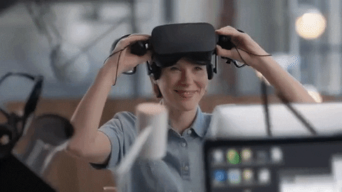
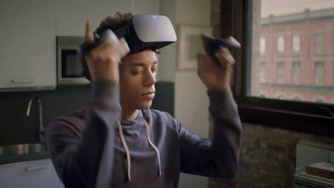

La realidad virtual ha conquistado el mundo de la tecnología. Pero ¿qué es exactamente la realidad virtual?
Continúe leyendo para descubrir lo que la realidad virtual puede hacer y cómo puede ser parte de experiencias increíbles que lo transportan desde la comodidad de su sala de estar a mundos lejanos que nunca supo que existían.
¿De qué trata la realidad virtual?
La verdad sobre la realidad virtual
La realidad virtual utiliza gráficos de vanguardia, el mejor hardware de su clase y experiencias representadas artísticamente para crear un entorno simulado por computadora en el que no eres solo un participante pasivo, sino un cómplice de la conspiración.
Con un visor de realidad virtual, estás completamente absorto en mundos realistas en 3D, lo que crea un cambio importante en la forma en que experimentamos el ámbito digital.
Un visor de realidad virtual generalmente presenta una pantalla dividida entre los ojos para mostrar a cada ojo una señal diferente. Esto crea un efecto 3D estereoscópico con sonido estéreo. También rastrea su posición en el espacio para orientar su punto de vista en el sistema.
Cuando combinas el visor de realidad virtual y el seguimiento de entrada, obtienes una experiencia completamente inmersiva y realista. Dado que el mundo que te rodea gira cada vez que mueves la cabeza, sientes que estás "en el juego" mental y físicamente. En otras palabras, te sientes parte de otro universo.
Realidad Virtual y Aumentada
Existen dos tipos diferenciados de realidad digital, la virtual y la aumentada.
Por una parte tienes la realidad virtual o VR, que es la que te sumerge por completo en el mundo virtual.
Esto quiere decir que en la realidad virtual no vas a ver tu entorno, solo vas a ver el contenido que estás consumiendo.
La realidad virtual suele utilizarse con unas gafas opacas con las que no ves lo que tienes delante de ti. Esto proporciona una experiencia totalmente inmersiva, de manera que si te mueves hacia los lados también se mueve el contenido como si estuvieras dentro de este mundo digital.
Lo que tienes frente a tus ojos es una pantalla que hace que veas todo el contenido al que estás accediendo. Por lo tanto, con la realidad virtual tú no puedes ver lo que tienes delante ni a los lados. Como mucho, puedes ver recreaciones virtuales de una extremidad o avatares o imágenes virtuales que representen a una persona con la que hablas.

Realidad Mixta
La realidad mixta combina la virtual y la aumentada, ofreciéndote lo mejor de los dos mundos.
Esto quiere decir que podrás consumir ambos tipos de contenido. Si quieres, podrás irte a una realidad virtual para evadirte de lo que tienes a tu alrededor, pero también tendrás la posibilidad de que se te muestre tu entorno real mientras sigues interactuando con contenido digital.
Los cascos o gafas de realidad mixta, por lo tanto, también deben tener todo el hardware que usan los de realidad virtual y aumentada. Por una parte, un visor opaco basado en pantallas que te muestran el contenido, pero también cámaras frontales con las que puedas ver lo que hay detrás de las gafas.
Así pues, este es el tipo más sofisticado de realidad digital, combinando la virtual y la aumentada para que seas tú quien decida qué aplicación y tipo de realidad quieres usar en cada momento. Los dos conceptos se fusionan en uno solo, de manera que no necesitas decidirte por uno u otro.
Todo esto permitirte interactuar con objetos virtuales en el mundo real o estar totalmente inmerso en un mundo completamente virtual. Todo dependerá del contenido que estés viendo o la app que estés usando.

¿Para quién es la realidad virtual y mixta?
Si bien la realidad virtual y mixta agrega una capa completamente nueva al entretenimiento, la tecnología va más allá de los juegos y ofrece algo para todos.
¿Sabías que con la realidad virtual y mixta puedes aprender un nuevo idioma , teletransportarte a casi cualquier parte del mundo o subir a bordo de la Estación Espacial Internacional ? La realidad virtual te permite explorar nuevos mundos e intentar hazañas que parecen inimaginables. Y tiene el potencial de transformar la forma en que jugamos, trabajamos, aprendemos, nos comunicamos y experimentamos el mundo que nos rodea.
Considere las posibilidades en el ámbito de la atención sanitaria. Oculus se asoció con el Children's Hospital Los Angeles para crear una simulación de realidad virtual que permita a los estudiantes y al personal de medicina sumergirse completamente en situaciones de trauma pediátrico de alto riesgo donde las decisiones en una fracción de segundo significan la diferencia entre la vida y la muerte.
Estos escenarios virtuales permiten a los médicos y estudiantes practicar y aprender en condiciones laborales realistas, ayudándoles a perfeccionar las habilidades que utilizarán para tratar a los pacientes. Al capacitarse con realidad virtual, los proveedores médicos pueden brindar una mejor atención.
La realidad virtual se utiliza en la industria automotriz para experimentar con nuevos diseños de automóviles. También encontrará marcas que lo utilizan en el comercio minorista para ayudar a los compradores a “probarse” virtualmente ropa y accesorios para ayudarles en sus decisiones de compra. E incluso se está utilizando en las fuerzas del orden y en el ejército para entrenamiento.
Entonces, si bien los juegos son una parte integral de la realidad virtual, la realidad virtual y mixta tiene muchas aplicaciones diferentes que solo se expandirán a medida que la tecnología se desarrolle aún más.